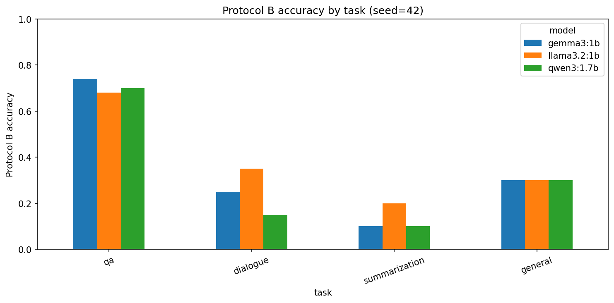
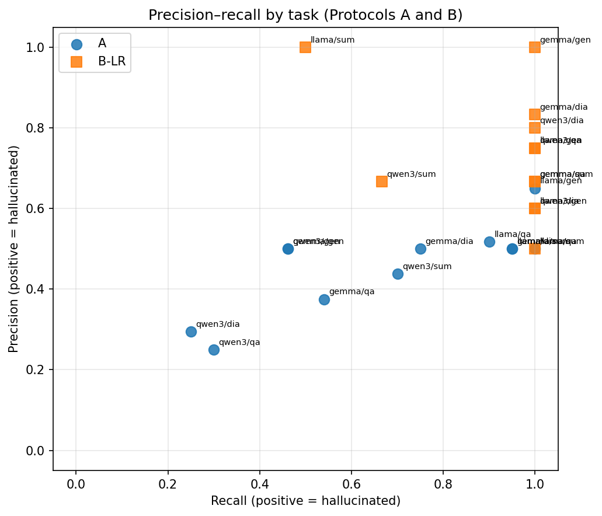

We study whether small open-source language models can discriminate hallucinated from faithful answers, and how that ability relates to their free-generation behavior on the same HaluEval tasks. We evaluate Llama 3.2 1B, Qwen3 1.7B, and Gemma 3 1B under two complementary protocols: paired Yes/No discrimination (Protocol A) and free generation with task-aware word-overlap scoring plus overlap-feature classifiers (Protocol B). Across 200 Protocol A judgements and 110 Protocol B items per model, discrimination accuracy remains modest (0.280–0.530 overall), F1 is inflated by Yes-bias especially for Llama, and task difficulty reverses between protocols: QA is easiest under free generation but among the hardest under discrimination. We report both protocols as complementary evaluations of distinct functionals of the same models rather than collapsing them into a single headline ranking.
Hallucinations, fluent but fabricated or ungrounded claims, remain a central obstacle to deploying language models in settings where factual reliability matters. A model that invents a citation, attributes a quotation to the wrong speaker, or summarizes a document with an event that never appears in the source can look competent while being wrong in ways that are costly to detect after the fact. Much of the public discussion of this problem focuses on frontier-scale systems with proprietary interfaces. Yet the models that many practitioners can actually run locally for chat, summarization, tutoring, and retrieval-augmented workflows are often in the one- to two-billion-parameter range. These compact open-source models are attractive precisely because they are cheap, inspectable, and deployable without sending user text to a remote API. That same deployment path makes their failure modes consequential: if a one-billion-parameter model cannot tell a supported answer from a fabricated one when both are placed in front of it, then any downstream filter that asks the model to “check itself” is unreliable by construction. If, on the other hand, the same model sometimes generates text that overlaps a gold reference more than a known hallucinated foil, that is evidence of a different capability (generation under a lexical faithfulness proxy), and conflating the two produces misleading claims about a single “hallucination rate.”
The evaluation literature already contains several ways to measure related phenomena. Benchmarks such as HaluEval provide paired faithful and hallucinated responses. TruthfulQA probes whether models reproduce human-like falsehoods. SelfCheckGPT estimates hallucination risk from disagreement among multiple samples without a gold reference. LLM-as-judge pipelines outsource grading to a stronger model. What remains under-specified for the small open-source regime is a careful separation between discrimination (given one candidate, is it hallucinated?) and free generation (write an answer, then score it against faithful and hallucinated references with an explicit rule). Those two questions induce different prediction problems, different label distributions, and different incentives for response bias. Treating either one as the sole headline number for “how much a small model hallucinates” obscures whether observed errors come from an inability to generate grounded text, an inability to judge candidates, or a trivial policy such as always answering Yes.
This report therefore separates those capabilities explicitly and measures both on the same HaluEval task families: question answering, dialogue response, summarization, and general user queries. We evaluate three small open-source models, Llama 3.2 1B, Qwen3 1.7B, and Gemma 3 1B, under two protocols. Protocol A is paired discrimination: given context and one candidate answer that is either the dataset’s faithful reference or its hallucinated counterpart, the model answers Yes or No to whether the candidate is hallucinated. Protocol B is free generation: the model writes an answer from the same context, we score that answer with a task-aware word-overlap rule against the faithful and hallucinated references, and we then train logistic regression and a small neural network on the resulting overlap features to detect whether the generation was labeled incorrect. Empirically, Protocol A overall accuracies are 0.530 (Llama), 0.280 (Qwen), and 0.395 (Gemma) on 200 judgements each; Protocol B free-generation accuracies are 0.464, 0.418, and 0.455 respectively on 110 items each. F1 on Protocol A is a poor standalone summary because Llama’s 0.674 F1 coexists with a 0.925 rate of predicting “hallucinated,” while QA accuracy rises under Protocol B (0.68–0.74) even as discrimination on QA remains weak. Our contribution is a reproducible, side-by-side formalization and measurement of discrimination versus free-generation evaluation for small open-source LLMs on HaluEval, showing that the two protocols estimate different model functionals and that task difficulty systematically reverses between them. We deliberately do not designate a single protocol as the headline leaderboard score; the scientific claim is the complementarity and the reversal, not a one-number ranking of the three models.
HaluEval supplies paired faithful and hallucinated responses across QA, dialogue, summarization, and general user queries, and is the primary data source for our experiments. The original benchmark emphasizes large-scale evaluation of hallucination phenomena and includes settings in which models are asked to identify hallucinations. Our Protocol A reuses that pairing, but differs from simply reporting a HaluEval leaderboard aggregate in three respects. First, we restrict attention to small open-source models that can be run locally, because that is the deployment regime motivating the project. Second, we treat the model under test itself as the Yes/No discriminator rather than relying on a larger external judge for the primary Protocol A metric. Third, we retain full confusion matrices, predicted-positive rates, and per-task breakdowns so that response bias is visible rather than collapsed into a single F1. In that sense we build on HaluEval’s data contribution while changing the inferential target from “how often do large models hallucinate on this benchmark” to “can these particular small models discriminate HaluEval’s own pairs, and how does that relate to their free generations on the same items.”
TruthfulQA probes whether models imitate human falsehoods on adversarially curated questions about the world. Its central concern is truthfulness relative to consensual reality, often without a document that the answer must be faithful to. That design is complementary to ours but not interchangeable. TruthfulQA does not present an explicit hallucinated foil beside a gold answer for binary discrimination on each item, and it does not score a unique free generation against a paired hallucinated reference with a deterministic overlap decision rule. Our Protocol A is closer to a forced-choice faithfulness test conditioned on HaluEval candidates and contexts. Protocol B occupies the generation-and-compare niche that TruthfulQA does not formalize with a hallucinated twin: the model must produce text, after which a fixed lexical rule decides whether that text is closer to the faithful or the hallucinated reference. A model could in principle do well on TruthfulQA-style world-knowledge probes while still failing Protocol A discrimination on document-grounded candidates, or the reverse; our experiments are designed to measure the latter family of failures directly.
Work on factuality and faithfulness distinguishes errors relative to world knowledge from errors relative to a provided source. Summarization and knowledge-grounded dialogue research has long argued that a summary can be factually true in the world yet unfaithful to the input document, or faithful to the document yet incomplete. HaluEval’s knowledge-conditioned tasks sit primarily in the faithfulness regime: the hallucination is defined relative to supplied knowledge, dialogue history, or document text. Our discrimination prompt asks whether the candidate is fabricated or unsupported by the given context, aligning Protocol A with faithfulness rather than open-world factuality. Protocol B’s overlap rule is likewise a faithfulness proxy, not a fact-checking system against the web. That alignment matters for interpretation. When Llama marks a faithful QA candidate as hallucinated, the error is a faithfulness-discrimination failure under HaluEval labels, not necessarily a claim that the string is false in the world.
SelfCheckGPT estimates hallucination risk by sampling multiple generations and measuring inconsistency among them, without requiring a gold answer. That approach addresses an important reference-free setting in which no trusted r+ exists. It does not ask a model to classify a single provided candidate, and it does not compare one free generation to a dataset-supplied hallucinated string via deterministic overlap. Protocol A is therefore complementary: one candidate, one binary decision, supervised labels from HaluEval. Protocol B is complementary in a different way: a single generation is scored against fixed references rather than against the model’s own resampled variants. SelfCheckGPT would be a natural third protocol in future work; it is not a substitute for either protocol here, because it answers a different statistical question (sample inconsistency) than discrimination risk or overlap-relative generation accuracy.
LLM-as-judge evaluations use a strong model to grade outputs, often with detailed rubrics and pairwise preferences. Those pipelines are powerful when the scientific goal is scalable approximation to human preference. They are the wrong primary instrument when the scientific goal is to characterize the small model’s own discrimination ability. We deliberately avoid outsourcing Protocol A labels to a larger judge. The object of study is whether Llama, Qwen, or Gemma can discriminate. Where LLM-as-judge papers measure agreement with humans, we measure the small model’s agreement with HaluEval’s pre-labeled candidates. Protocol B goes further and removes the LLM judge entirely for the generation score, replacing it with an explicit overlap rule and, for secondary analysis, classical classifiers trained on those overlaps. In summary, HaluEval gives us the pairs, TruthfulQA motivates truthfulness evaluation without our paired Yes/No setup, the factuality/faithfulness taxonomy situates our context-grounded prompt, SelfCheckGPT covers reference-free multi-sample detection that neither of our protocols implements, and LLM-as-judge work motivates external grading that we intentionally replace with the model under test (Protocol A) or with a deterministic overlap rule and classical classifiers (Protocol B).
Let 𝒯 = {qa, dialogue, summarization, general}
index HaluEval tasks. For each task t ∈ 𝒯 we draw a fixed random subset
of items with seed 42, yielding nqa = 50 and nt = 20 for the
other three tasks, hence n = 110 items total per model. Each
item i provides a context
ci
(possibly empty for general queries), a prompt stem qi, a faithful
reference ri+,
and a hallucinated reference ri−.
For general items, only one of ri+
or ri−
is nonempty according to the dataset’s hallucination label, so
Protocol A contributes one judgement rather than two for those rows. The
models under test are m ∈ {llama3.2:1b, qwen3:1.7b, gemma3:1b},
queried locally through Ollama with short generations and low
temperature for discrimination. For Qwen3 we disable thinking mode at
the API level (think = false)
so that completions occupy the content channel rather than exhausting
the token budget on hidden reasoning; without that setting, Qwen3 can
return empty content fields and produce vacuous
Protocol A/B scores that reflect an interface mismatch rather than
discrimination or generation ability.
For every item with a nonempty faithful reference we form a judgement instance (ci, qi, ri+, y = 0), and for every nonempty hallucinated reference (ci, qi, ri−, y = 1), where y = 1 denotes “hallucinated.” This produces NA = 200 labelled judgements per model in our run. The model implements a predictor ŷ = fm(c, q, r) ∈ {0, 1} by answering a Yes/No prompt that asks whether the candidate is a hallucination fabricated or unsupported by the context. We parse the completion by normalizing punctuation and reading the leading Yes/No token, with a conservative fallback that searches for an unambiguous Yes or No elsewhere in the string. With positive class y = 1, $$\begin{align*} \mathrm{TP}&=\sum\mathbf{1}[\hat y=1,y=1],& \mathrm{FP}&=\sum\mathbf{1}[\hat y=1,y=0],\\ \mathrm{TN}&=\sum\mathbf{1}[\hat y=0,y=0],& \mathrm{FN}&=\sum\mathbf{1}[\hat y=0,y=1], \end{align*}$$ and we report $$\begin{align*} \mathrm{Acc}&=\frac{\mathrm{TP}+\mathrm{TN}}{N},& \mathrm{Prec}&=\frac{\mathrm{TP}}{\mathrm{TP}+\mathrm{FP}},& \mathrm{Rec}&=\frac{\mathrm{TP}}{\mathrm{TP}+\mathrm{FN}},\\ F_1&=2\cdot\frac{\mathrm{Prec}\cdot\mathrm{Rec}}{\mathrm{Prec}+\mathrm{Rec}}, \end{align*}$$ with zero-division defined as zero. We additionally report the predicted positive rate $\widehat{\pi}=\frac{1}{N}\sum\hat y$ because, when labels are near-balanced, a trivial always-Yes policy can inflate recall and F1 without demonstrating discrimination. Protocol A therefore estimates the risk 𝔼[1[fm(C, Q, R) ≠ Y]] under the HaluEval candidate distribution: a supervised discrimination functional of fm.
The same items are presented without a candidate answer. Let ai = gm(ci, qi) be the model’s free generation under a task-specific prompt (short answer for QA, next dialogue turn, two-to-three-sentence summary, or short general reply). Define a normalization map that lowercases and strips punctuation, and let T(u) be the resulting token set. Jaccard overlap is $$\mathrm{ov}(u,v)=\begin{cases} \dfrac{|T(u)\cap T(v)|}{|T(u)\cup T(v)|} & \text{if }T(u),T(v)\neq\emptyset,\\ 0 & \text{otherwise.} \end{cases}$$ Correctness corri ∈ {0, 1} is task-dependent. For QA, corri = 1 if the normalized faithful string is a substring of the normalized answer or its token set is contained in the answer’s token set; otherwise we fall through to the overlap rule used for other tasks: corri = 1 [ov(ai, ri+) > ov(ai, ri−)] when ri+ is nonempty. Protocol B generation accuracy is $\frac{1}{n}\sum_i\mathrm{corr}_i$. This estimates a different functional: performance of the generator gm under a deterministic reference comparison, not the discrimination risk of fm. The QA substring rule is intentionally lenient to short entity answers; the overlap rule for longer outputs is stricter in requiring the generation to be lexically closer to the faithful reference than to the hallucinated foil.
On Protocol B outputs we form features xi = (ov(ai, ri+), ov(ai, ri−)) and labels zi = 1 − corri (positive = generation judged hallucinated/incorrect). A stratified 75/25 split with the same seed trains ℓ2-regularized logistic regression with grid search over C ∈ {0.1, 1, 10} and a one-hidden- layer network with eight ReLU units and a sigmoid output trained with binary cross-entropy. Classifier accuracy is measured on the held-out z labels. That quantity is a post-hoc detectability score in a two-dimensional feature space, not a claim that the classifier “answers the user question better” than the LLM. We also report precision, recall, and F1 for these detectors with the same positive-class convention as Protocol A, and we store per-item predicted probabilities for later AUC analysis.
We do not standardize on a single protocol for headline ranking. Let RA(m, t) be Protocol A accuracy and RB(m, t) Protocol B accuracy on task t. Because fm and gm are distinct maps, and because the sampling measures differ (candidate judgement versus free generation), RA and RB are not estimators of a common parameter θ(m). Any scalar that averages them would mix incompatible estimands. We therefore report both as complementary evaluations and, separately, the signed gap Δ(m, t) = RA(m, t) − RB(m, t) only as evidence of task-difficulty reversal. A negative Δ means free-generation accuracy exceeds discrimination accuracy on that task; it does not mean the model is “better” in an absolute sense. A joint key (t, i, m) stores both views when present; missing cells are left missing rather than imputed, so coverage is an explicit part of the experimental record.
All numbers below come from the committed result CSVs under
results/ for the shared 110-item sample (Protocol B) and
200 judgements per model (Protocol A). Protocol B was executed for all
three models. No larger Protocol A artefact (for example a
9,000-judgement midway Table 1) is present in the project
repository, so every quantitative claim in this section is taken from
that reproducible local run rather than from an external or missing
table.
Table 1 summarizes overall discrimination metrics. Llama attains the highest accuracy (0.530) and F1 (0.674), Qwen the lowest (0.280 accuracy, 0.357 F1), and Gemma sits between them (0.395 / 0.525). These F1 values are misleading if read as a ranking of discrimination skill. Llama predicts the positive (hallucinated) class on 185 of 200 judgements (rate 0.925), yielding recall 0.942 but precision only 0.524. The confusion matrix contains only nine true negatives and six false negatives: the model almost never says No. On a near-balanced label distribution (gold positive rate 0.515), a constant-Yes classifier already achieves high recall and middling precision, so Llama’s F1 largely reflects response bias rather than calibrated discrimination. Gemma also skews positive (predicted Yes rate 0.760) with recall 0.650 and precision 0.441. Qwen’s predicted Yes rate (0.605) is closer to the base rate, yet accuracy falls to 0.280 with precision 0.331 and recall 0.388, indicating weak separation rather than a simple always-Yes policy. In that sense, none of the three models shows strong genuine discrimination on this sample. Llama exhibits the clearest fixed-bias artifact; Qwen fails with more balanced predictions; Gemma mixes moderate bias with moderate error.
| Model | Acc. | Prec. | Rec. | F1 | TP/FP/TN/FN | Pred. Yes |
|---|---|---|---|---|---|---|
| Llama 3.2 1B | 0.530 | 0.524 | 0.942 | 0.674 | 97/88/9/6 | 0.925 |
| Qwen3 1.7B | 0.280 | 0.331 | 0.388 | 0.357 | 40/81/16/63 | 0.605 |
| Gemma 3 1B | 0.395 | 0.441 | 0.650 | 0.525 | 67/85/12/36 | 0.760 |
Qualitatively, Llama’s false positives include faithful QA candidates such as the gold entity “Badr Hari,” which the model nonetheless labels Yes, while one of its scarce true negatives is the faithful candidate “Dessau,” labeled No. The coexistence of both outcomes shows that the bias is strong but not literally constant; it is still far from useful discrimination. Per-task Protocol A accuracies (Table 2) show that general queries are relatively easier for Llama (0.65), while QA is hardest for Qwen (0.20) and Gemma (0.32). Summarization and dialogue hover near 0.50 for Llama and Gemma, consistent with near-chance behavior once class balance is considered.
| Model | QA | Dialogue | Summarization | General |
|---|---|---|---|---|
| Llama 3.2 1B | 0.53 | 0.50 | 0.50 | 0.65 |
| Qwen3 1.7B | 0.20 | 0.325 | 0.40 | 0.35 |
| Gemma 3 1B | 0.32 | 0.50 | 0.50 | 0.35 |
Table 3 reports free-generation accuracy under the overlap rule. Overall accuracies are 0.464 (Llama), 0.418 (Qwen), and 0.455 (Gemma). QA dominates: 0.68, 0.70, and 0.74 respectively, whereas summarization falls to 0.20, 0.10, and 0.10. Dialogue ranges from 0.15 (Qwen) to 0.35 (Llama); general is uniformly 0.30. For Llama, incorrect generations distribute across tasks as 16 QA errors, 13 dialogue errors, 14 general errors, and 16 summarization errors, so the overall 0.464 figure is not driven by a single collapsed task. Qualitatively, short QA answers often contain the gold entity under the substring rule (Gemma, for example, answers “Dessau” on a Hotpot-style item where that is the faithful span), while long summaries frequently lose to the hallucinated foil on Jaccard overlap. In one Llama summarization failure, the generation’s overlap with the faithful summary is 0.247 versus 0.317 with the hallucinated summary, so the decision rule marks the output incorrect even though the generation discusses the same news event; lexical proximity to the foil is enough to flip the label. That pattern explains why summarization looks catastrophically hard under Protocol B without implying that the model produced unrelated text.
| Model | QA | Dialogue | Summ. | General | Overall |
|---|---|---|---|---|---|
| Llama 3.2 1B | 0.68 | 0.35 | 0.20 | 0.30 | 0.464 |
| Qwen3 1.7B | 0.70 | 0.15 | 0.10 | 0.30 | 0.418 |
| Gemma 3 1B | 0.74 | 0.25 | 0.10 | 0.30 | 0.455 |
Held-out overlap-classifier accuracies (Table 4) substantially exceed free-generation accuracy for every model: logistic regression reaches 0.643 / 0.750 / 0.857 and the neural net 0.679 / 0.821 / 0.857 for Llama, Qwen, and Gemma respectively, versus direct accuracies 0.464 / 0.418 / 0.455. The correct interpretation is not that classifiers answer user questions better, but that the two-dimensional overlap feature (ov(a, r+), ov(a, r−)) separates Protocol B’s own correctness labels more cleanly than the generator matches r+. On the same held-out splits (n = 28), detector F1 for logistic regression is 0.722 (Llama), 0.811 (Qwen), and 0.882 (Gemma). Relative to direct generation accuracy, the absolute lifts are approximately +0.179 (Llama LR), +0.332 (Qwen LR), and +0.402 (Gemma LR). These lifts shrink the claim one should make: overlap features are informative about the scoring rule’s own errors; they do not rehabilitate the generator.
| Model | Direct acc. | LR acc. | NN acc. |
|---|---|---|---|
| Llama 3.2 1B | 0.464 | 0.643 | 0.679 |
| Qwen3 1.7B | 0.418 | 0.750 | 0.821 |
| Gemma 3 1B | 0.455 | 0.857 | 0.857 |
Table 5 reports Δ = RA − RB by task. For every model, QA shows a negative gap (Protocol B higher): −0.15 (Llama), −0.50 (Qwen), −0.42 (Gemma). Non-QA tasks are positive: discrimination accuracy exceeds free-generation accuracy on dialogue, summarization, and usually general. Thus task difficulty reverses. QA is the easiest free-generation task in Table 3 and among the hardest discrimination tasks in Table 2. Summarization is near chance under Protocol A for Llama and Gemma (0.50) but near floor under Protocol B (0.10–0.20). Figure 1 visualizes Protocol B accuracies; Figure 2 places Protocol A and Protocol B logistic-regression operating points in precision–recall space. We treat this reversal as evidence that a single hallucination leaderboard mixing judgement and generation would scramble both model comparisons and task comparisons.
| Model | Task | RA | RB | Δ (flip?) |
|---|---|---|---|---|
| Llama 3.2 1B | QA | 0.53 | 0.68 | −0.15 (yes) |
| Llama 3.2 1B | Dialogue | 0.50 | 0.35 | +0.15 |
| Llama 3.2 1B | Summarization | 0.50 | 0.20 | +0.30 |
| Llama 3.2 1B | General | 0.65 | 0.30 | +0.35 |
| Qwen3 1.7B | QA | 0.20 | 0.70 | −0.50 (yes) |
| Qwen3 1.7B | Dialogue | 0.325 | 0.15 | +0.175 |
| Qwen3 1.7B | Summarization | 0.40 | 0.10 | +0.30 |
| Qwen3 1.7B | General | 0.35 | 0.30 | +0.05 |
| Gemma 3 1B | QA | 0.32 | 0.74 | −0.42 (yes) |
| Gemma 3 1B | Dialogue | 0.50 | 0.25 | +0.25 |
| Gemma 3 1B | Summarization | 0.50 | 0.10 | +0.40 |
| Gemma 3 1B | General | 0.35 | 0.30 | +0.05 |


results/figure_captions.md.We built and ran a reproducible dual-protocol evaluation of hallucination behavior in three small open-source LLMs on HaluEval. Protocol A asks each model to discriminate faithful from hallucinated candidates; Protocol B asks each model to generate freely, scores those generations with a fixed overlap rule, and trains classical detectors on overlap features. The experimental design refuses a single headline protocol: discrimination risk and generation-under- overlap are different functionals, and the signed gap Δ is used only to expose task-difficulty reversal.
What a reader now knows, concretely, is the following comparative picture. On this sample, discrimination accuracies are only 0.530, 0.280, and 0.395 for Llama, Qwen, and Gemma. Llama’s 0.674 F1 is largely a Yes-bias artifact, with a 0.925 positive prediction rate and only nine true negatives out of 200 judgements. Free-generation overall accuracies are 0.464, 0.418, and 0.455, with QA much easier (0.68–0.74) than summarization (0.10–0.20). QA is the unique task where Protocol B accuracy exceeds Protocol A for all three models, with gaps as large as −0.50 for Qwen. Overlap-feature classifiers detect Protocol B error labels at held-out accuracies 0.64–0.86, well above generation accuracy, showing that post-hoc feature separation is easier than faithful generation under our rule. None of those statements is available from Protocol A alone or Protocol B alone.
Relative to the literature reviewed above, this contribution is not a new benchmark dataset and not a reference-free SelfCheck-style sampler. It is a methodological insistence that paired discrimination and free-generation-plus- overlap estimate different functionals of the same small models, reported jointly without collapsing to one score. That stance extends HaluEval-style evaluation by making the small model the discriminator and by insisting on bias-aware reading of F1. It extends truthfulness-style work by adding an explicit hallucinated foil and a second generation protocol tied to the same items. It complements LLM-as-judge pipelines by refusing to outsource Protocol A labels to a larger model and by using a deterministic overlap rule for Protocol B generation scoring.
Several limitations bound these claims. The present reproducible run
uses 110 Protocol B items and 200 Protocol A judgements per model rather
than a full HaluEval sweep; classifier test sets contain only 28 points;
and overlap scoring is a lexical proxy for faithfulness, not human
judgment. Qwen3 required an explicit think = false
setting to yield nonempty completions, which is an engineering detail
with scientific consequences for anyone repeating the study. Because the
repository contains no larger Protocol A table, we do not cite a
separate midway judgement count alongside these numbers. Future work
should vary discrimination prompts systematically to test how sensitive
the Yes-bias finding is to wording and to decoding temperature, evaluate
a second dataset beyond HaluEval to check whether the QA difficulty
reversal replicates outside this benchmark’s construction, and construct
a small synthetic ground-truth validation set in which faithfulness is
unambiguous by design so that overlap-rule errors can be separated from
model errors. Richer Protocol B features, such as length ratios or
entailment scores, could be added while keeping the same non-imputation
rule for missing cells. Extending both protocols under identical
sampling to larger open models would clarify whether the
bias-versus-discrimination pattern is specific to the sub-2B regime
studied here or persists as capacity increases.
9
Junyi Li, Xiaoxue Cheng, Wayne Xin Zhao, Jian-Yun Nie, and Ji-Rong Wen. HaluEval: A Large-Scale Hallucination Evaluation Benchmark for Large Language Models. In Proceedings of the 2023 Conference on Empirical Methods in Natural Language Processing, pages 6449–6464, Singapore, 2023. Association for Computational Linguistics.
Stephanie Lin, Jacob Hilton, and Owain Evans. TruthfulQA: Measuring How Models Mimic Human Falsehoods. In Proceedings of the 60th Annual Meeting of the Association for Computational Linguistics (Volume 1: Long Papers), pages 3214–3252, Dublin, Ireland, 2022. Association for Computational Linguistics.
Joshua Maynez, Shashi Narayan, Bernd Bohnet, and Ryan McDonald. On Faithfulness and Factuality in Abstractive Summarization. In Proceedings of the 58th Annual Meeting of the Association for Computational Linguistics, pages 1906–1919, 2020. Association for Computational Linguistics.
Potsawee Manakul, Adian Liusie, and Mark Gales. SelfCheckGPT: Zero-Resource Black-Box Hallucination Detection for Generative Large Language Models. In Proceedings of the 2023 Conference on Empirical Methods in Natural Language Processing, pages 9004–9017, Singapore, 2023. Association for Computational Linguistics.
Lianmin Zheng, Wei-Lin Chiang, Ying Sheng, Siyuan Zhuang, Zhanghao Wu, Yonghao Zhuang, Zi Lin, Zhuohan Li, Dacheng Li, Eric Xing, Hao Zhang, Joseph E. Gonzalez, and Ion Stoica. Judging LLM-as-a-Judge with MT-Bench and Chatbot Arena. In Advances in Neural Information Processing Systems, volume 36, 2023.